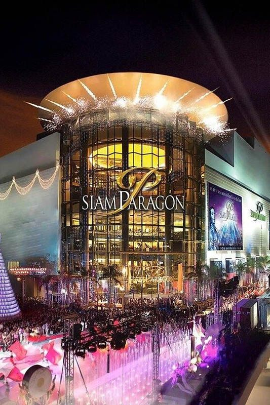
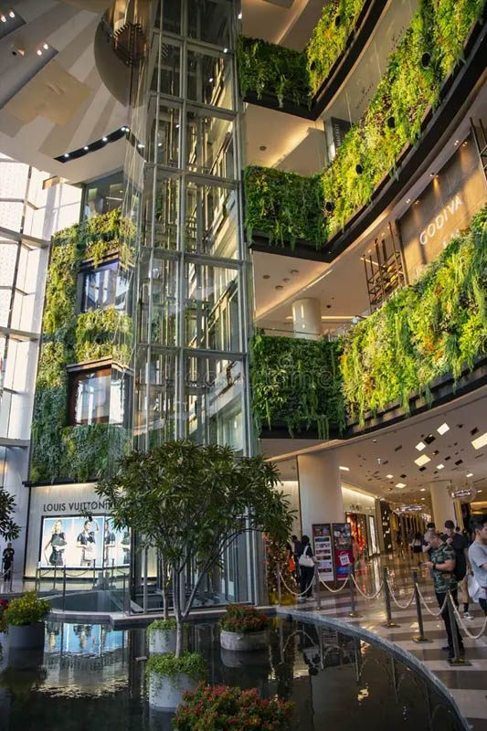

Siam Paragon stands as Bangkok's ultimate luxury shopping destination, a prestigious mall that defines premium retail experience in Southeast Asia. Located just 2 BTS stops from Royal Ivory Hotel and directly connected to Siam station, this world-class shopping center represents the pinnacle of luxury retail in Thailand.
What makes Siam Paragon extraordinary is its unparalleled collection of luxury brands and premium experiences. Home to flagship stores of the world's most prestigious fashion houses, the mall features everything from Hermès and Louis Vuitton to exclusive boutiques, alongside the famous Gourmet Market and Southeast Asia's largest aquarium.
For Royal Ivory Hotel guests, Siam Paragon offers the perfect luxury shopping experience. Whether you're browsing international designer collections, dining at world-class restaurants, or exploring unique attractions like Sea Life aquarium, Siam Paragon provides an elevated shopping experience that rivals luxury destinations worldwide.
Siam Paragon offers the most convenient access of any luxury shopping destination from Royal Ivory Hotel. The direct BTS connection makes it effortless to reach Bangkok's premier shopping experience in just minutes.
Total Cost: 45 Baht one-way | Journey Time: 10-12 minutes | Transfers: None required
🏆 Royal Ivory Luxury Tip: Siam Paragon represents Bangkok's finest shopping experience. Visit in the morning for a more relaxed browsing atmosphere, especially in luxury boutiques. The skybridge connection from BTS Siam deposits you directly into this retail paradise without weather concerns.
Siam Paragon houses the most comprehensive collection of luxury brands in Thailand, featuring flagship stores and exclusive boutiques of the world's most prestigious fashion houses. The carefully curated selection represents the pinnacle of international luxury retail.
| Category | Featured Brands | Location | Experience Level |
|---|---|---|---|
| 👜 High Fashion | Hermès, Louis Vuitton, Gucci, Prada | Ground & 1st floors | Ultra-luxury flagship stores |
| 💍 Jewelry & Watches | Cartier, Rolex, Tiffany & Co. | Ground floor luxury zone | Exclusive boutique experience |
| 👔 Men's Luxury | Hugo Boss, Armani, Brioni | 1st & 2nd floors | Premium menswear specialists |
| 👗 Women's Designer | Chanel, Dior, Valentino | 1st & 2nd floors | Haute couture and ready-to-wear |
| 👟 Luxury Casual | Burberry, Coach, Michael Kors | Various floors | Accessible luxury brands |

Siam Paragon's famous Gourmet Market occupies an entire floor, offering Bangkok's most extensive selection of premium and imported foods. This culinary destination combines international grocery shopping with gourmet dining in an elegant marketplace setting.
Siam Paragon features Bangkok's most prestigious restaurant collection, with multiple floors dedicated to fine dining. From international celebrity chef restaurants to exclusive Thai cuisine, the dining options rival the world's best shopping destinations.
Celebrity restaurants: International chef-owned establishments
Thai fine dining: Elevated Thai cuisine in elegant settings
International cuisine: Japanese, Italian, French, and contemporary fusion
Exclusive atmosphere: Sophisticated dining environments
Sea Life Bangkok Ocean World, located in Siam Paragon's basement, stands as Southeast Asia's largest aquarium. This world-class attraction combines marine education with entertainment, featuring over 30,000 marine animals in immersive environments.
🎬 Entertainment Options:
Paragon Cineplex: Premium cinema experience with luxury seating
Bowling alley: Upscale bowling with modern facilities
Karaoke: Private karaoke rooms with premium sound systems
Art galleries: Rotating exhibitions and cultural displays
Siam Paragon provides world-class services that enhance the luxury shopping experience. From concierge services to premium customer amenities, every aspect is designed to exceed expectations.
✨ Luxury Facilities:
High-speed WiFi: Complimentary premium internet throughout
Rest areas: Elegant seating areas and quiet zones
Premium restrooms: Luxury facilities with attendant service
Climate control: Optimal temperature and air quality
Security: Discreet but comprehensive security presence
From Royal Ivory Hotel: Take BTS Sukhumvit Line from Nana to Siam station (2 stops, 8 minutes). Siam Paragon is directly connected to BTS Siam station via skybridge. Total journey: 10-12 minutes including walking time.
Siam Paragon is open daily from 10:00 AM to 10:00 PM. Individual luxury boutiques may have varying hours. Restaurants typically operate during mall hours, with some extending to 11:00 PM. Sea Life aquarium operates 10:00-21:00.
Siam Paragon features top luxury brands including Hermès, Louis Vuitton, Gucci, Prada, Chanel, Dior, Cartier, Rolex, and many other international designer boutiques. It's Bangkok's premier destination for luxury shopping with the largest selection of high-end brands.
Sea Life Bangkok Ocean World is Southeast Asia's largest aquarium located in Siam Paragon's basement. Features over 30,000 marine animals, underwater tunnel, shark feeding shows, and interactive experiences. Admission: 990 Baht adults, 790 Baht children.
Yes, while known for luxury, Siam Paragon offers experiences for all visitors. The Gourmet Market, Sea Life aquarium, restaurants, and cinema provide value regardless of shopping budget. It's worth visiting for the architecture and atmosphere even without purchasing luxury goods.
Siam Paragon offers more than shopping - it provides a complete luxury lifestyle experience. From world-class brands to premium dining and unique attractions, it represents the pinnacle of retail sophistication in Asia.
Central World: 5-minute walk for additional luxury and international brands
Siam Center: Connected via skybridge for trendy and youth brands
Siam Discovery: Creative and lifestyle brands in connected location
Complete experience: Entire day of luxury shopping in connected area